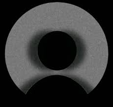

آراء الطلاب

"أفضل مدرس تاريخ واجهته، الشرح ممتع والفهم سهل."
محمد علي
"المذكرة والخرائط ساعدتني جدًا في المذاكرة قبل الامتحان."
سارة محمود
"الدعم المباشر فرق كبير، كل سؤال ليه رد سريع وواضح."
طالب مستفيد
سنوات خبرة
كورسات متاحة
إكل اللي هتحتاجه عشان تذاكر وتفهم وتكسر الدنيا في التاريخ للثانوية العامة
بنشرح الأحداث كأنك كنت عايشها، مش مجرد حفظ تواريخ.
خرائط ورسوم توضيحية تخليك تربط الأحداث ببعض بسهولة.
قبل الامتحان تراجع من غير ما تتلخبط ولا تضيع وقت.
نماذج امتحانات زي الوزارة عشان تدخل وانت مطمئن.
لو حاجة وقفت معاك، المدرس بيرد عليك فوراً.
هنحكيلك الحكايات اللي ورا الأحداث، عشان التاريخ يبقى حي ومشوق.
"أفضل مدرس تاريخ واجهته، الشرح ممتع والفهم سهل."
"المذكرة والخرائط ساعدتني جدًا في المذاكرة قبل الامتحان."
"الدعم المباشر فرق كبير، كل سؤال ليه رد سريع وواضح."